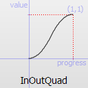
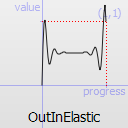

Easing
From Nexus RP: Wiki
Easing functions describe functions that control the way an interpolation between 0 and 1 is done.
The most basic easing function, linear, is just a linear interpolation at constant speed. Other more advanced easing functions can have acceleration at the beginning, the end or both or deceleration, or even bouncing or elastic effects.
Preliminary note
In the functions using easing, there are usually 3 optional parameters. Most functions don't need them at all, the ones needing one or more parameters are listed in the table below. When providing optional parameters, all the parameters before a given parameter must be filled, even if the easing function you intend to use doesn't require such a parameter. In this case, simply use 0 for the parameters you don't need. Examples:
- "Linear" can be used simply with getEasingValue( fProgress, "Linear" )
- "OutElastic" can define fEasingPeriod and fEasingAmplitude so it can be used with getEasingValue( fProgress, "OutElastic", 0.3, 1.0 )
- "InBack" can define fEasingOvershoot, but since it comes after fEasingPeriod and fEasingAmplitude in the order of parameters, 0 must be used for the others with getEasingValue( fProgress, "InBack", 0, 0, 1.7015 )
Easing functions
--List of builtin easing functions builtins={ "Linear", "InQuad", "OutQuad", "InOutQuad", "OutInQuad", "InElastic", "OutElastic", "InOutElastic", "OutInElastic", "InBack", "OutBack", "InOutBack", "OutInBack", "InBounce", "OutBounce", "InOutBounce", "OutInBounce", "SineCurve", "CosineCurve" }
Default values are (when a function can use a parameter but it's not defined by the user):
- fEasingPeriod: 0.3
- fEasingAmplitude : 1.0
- fEasingOvershoot: 1.701
| Easing function | Function profile | Uses fEasingPeriod | Uses fEasingAmplitude | Uses fEasingOvershoot | Comments |
|---|---|---|---|---|---|
| Linear |  |
||||
| InQuad |  |
||||
| OutQuad |  |
||||
| InOutQuad |  | ||||
| OutInQuad |  |
||||
| InElastic |  |
yes | yes | Due to the elastic effect, this easing function produces some values < 0 | |
| OutElastic |  |
yes | yes | Due to the elastic effect, this easing function produces some values > 1 | |
| InOutElastic |  |
yes | yes | Due to the elastic effect, this easing function produces some values < 0 and > 1 | |
| OutInElastic |  | yes | yes | Due to the elastic effect, this easing function produces some values < 0 and > 1 | |
| InBack |  |
yes | Due to overshoot, this easing function produces some values < 0 | ||
| OutBack |  |
yes | Due to overshoot, this easing function produces some values > 1 | ||
| InOutBack |  |
yes | Due to overshoot, this easing function produces some values <0 and > 1 | ||
| OutInBack |  |
yes | |||
| InBounce |  |
yes | |||
| OutBounce |  |
yes | |||
| InOutBounce |  |
yes | |||
| OutInBounce |  |
yes | |||
| SineCurve | This easing function doesn't end at 1 but goes back to 0. In this case, for interpolation, the target value is just an edge but doesn't represent the stop value. | ||||
| CosineCurve | This easing function both starts and stops at 0.5, going first to 1 then 0. In this case, for interpolation, the source and target values are just the edges but don't represent the start/stop values. |
Examples
Example 1: This example move gate with easing.
local x,y,z = 2096.3, 1721, 12.7 local easing = "OutBounce" local time = 2000 local gate = createObject(980, x,y,z, 0, 0, 63) local marker = createMarker(x,y,z, "cylinder", 12, 0, 0, 0, 0) function moveGate(hitPlayer, matchingDimension) moveObject(gate, time, x+4.9, y+9.6, z, 0, 0, 0, easing) end addEventHandler("onMarkerHit", marker, moveGate) function moveBack() moveObject(gate, time, x, y, z, 0, 0, 0, easing) end addEventHandler("onMarkerLeave", marker, moveBack)
Source
The naming conventions of the functions below, available in moveObject, interpolateBetween, or getEasingValue have been extracted from Qt documentation. Only a subset of those functions is available in NRP since some of them are a bit redundant (only the profile of the acceleration/deceleration changes). The pictures of the easing functions are directly extracted from Qt documentation, © 2008-2010 Nokia Corporation and/or its subsidiaries.